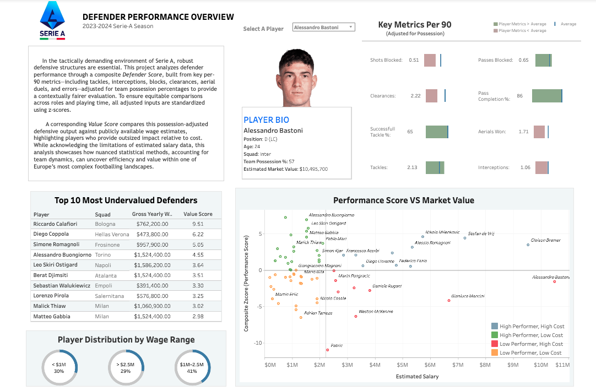

PROJECT: Serie-A Defender Performance Analysis
A data-driven analysis of Serie A defender performance, aiming to explore and identify undervalued talent through statistical normalization and contextualization for playtime and team possession.
1. Project Overview & Problem Statement
In the tactically demanding environment of Serie A, robust defensive structures are paramount. This project aims to objectively quantify individual defender performance and compare it against player wages to identify undervalued talent. A primary challenge was the absence of objective, normalized metrics for equitable player comparison. Raw statistics are often misleading as they don't account for differing playtime or a team's possession-based strategy, which significantly impacts a defender's engagement and statistical volume. This analysis tackles these issues to provide a fairer assessment for scouting and recruitment.
2. Data Collection & Cleaning
Sources Used:
- FBref: Core Player & Defensive Statistics (e.g., basic player info, tackles, blocks, interceptions)
- FBref: Miscellaneous Defensive Stats (e.g., aerials won/lost, clearances, errors)
- FBref: Passing Statistics (e.g., pass completion rates, attempted passes)
- FBref: Player Wage Data
- Capology: Player Wage Data
- FCtables: Team Possession Statistics
Key Data Cleaning & Initial Processing Steps:
I implemented a meticulous cleaning and initial processing pipeline using a combination of SQL and Python, ensuring accuracy, consistency, and suitability for robust analysis. Key steps included:
- Initial Data Structuring & Formatting: I corrected header columns, converted them to snake_case for consistency, and removed unnecessary columns. Specific data extractions were performed, such as parsing USD amounts from wage strings and converting Euros to USD using a 1.03 exchange rate.
- Data Quality & Blank Handling: I identified and converted blank cells/rows to 0 where appropriate, preventing issues during numerical operations and database import.
- Player & Data Normalization for Integration (Python & Google Sheets): A Python script was used to handle and convert non-standard regex characters in player names, crucial for seamless import into SQL. I also split position columns (e.g., "CB,DM") into separate fields to better categorize players.
- Filtering & Qualification: The dataset was strictly filtered to include only defenders. To ensure statistical reliability and account for sufficient playtime, players with fewer than 1140 minutes played were removed from the analysis. This threshold was informed by established analytical practices (approximately 12 full matches in a season).
- Handling Duplicate Player Records & Aggregation: Players who played for multiple teams in a season had separate data rows; I identified these duplicates and combined their records. For wage data, I implemented conditional logic to sum wages if players had different salaries from multiple clubs, or kept them consistent if salaries were the same across loan spells.
- Data Loading & Validation: After cleaning, I loaded the prepared datasets into SQL tables. I performed VLOOKUP checks between datasets (e.g., player stats and wages) to ensure all players were correctly matched and linked across sources, confirming data integrity before analysis.
Key Python Scripts for Data Acquisition & Pre-processing:
To gather comprehensive data and ensure its readiness for analysis, I developed custom Python scripts. These scripts were essential for automating data extraction from various web sources that lacked direct APIs, and for standardizing text data that contained non-standard characters and diacritics.
Web Scraping Snippet (Example from FBref Data Collection):
This snippet illustrates the core logic used in my web scraping scripts to extract structured table data from web pages using Selenium. Similar patterns were applied to collect defensive, passing, and miscellaneous statistics from FBref.
# General Web Scraping Function Example (similar to core_defensive_actions_web_scrapper_script.py)
from selenium import webdriver
from selenium.webdriver.support.ui import WebDriverWait
from selenium.webdriver.support import expected_conditions as EC
from selenium.webdriver.common.by import By
import csv
def scrape_table_data(url: str, table_id: str, output_path: str):
"""
Scrapes a specific HTML table from a given URL based on its ID,
extracting headers and all row data, then saves to a CSV file.
"""
driver = webdriver.Chrome() # Assumes chromedriver is configured on PATH
driver.set_page_load_timeout(120)
try:
driver.get(url)
# Wait until the table is present in the DOM
WebDriverWait(driver, 20).until(
EC.presence_of_element_located((By.ID, table_id))
)
table = driver.find_element(By.ID, table_id)
# Extract headers from the table's thead
header_cells = table.find_element(By.TAG_NAME, "thead").find_elements(By.TAG_NAME, "th")
headers = [cell.text.strip() for cell in header_cells]
# Extract all row data from the table's tbody
body_rows = table.find_element(By.TAG_NAME, "tbody").find_elements(By.TAG_NAME, "tr")
data = []
for row in body_rows:
cells = row.find_elements(By.TAG_NAME, "td")
row_text = [cell.text.strip() for cell in cells]
data.append(row_text)
# Write the extracted data to a CSV file
with open(output_path, "w", newline="", encoding="utf-8") as csvfile:
writer = csv.writer(csvfile)
writer.writerow(headers)
writer.writerows(data)
print(f"Data successfully scraped from {url} and saved to {output_path}")
except Exception as e:
print(f"An error occurred during scraping {url}: {e}")
finally:
driver.quit()
# Example: How it would be called for defensive stats
# scrape_table_data(
# "https://fbref.com/en/comps/11/2023-2024/defense/2023-2024-Serie-A-Stats",
# "stats_defense",
# "data/raw/serie_a_defense_stats.csv"
# )
Text Normalization Snippet (for handling special characters):
This function was critical for standardizing player names and other text fields, removing diacritics and replacing special Unicode characters with their ASCII equivalents. This ensured consistent merging of data across different sources and smooth import into SQL.
# Text Normalization Function (from regex_processing_script_for_wages.py)
import unicodedata
# A mapping of common special Unicode characters to their ASCII replacements
CHAR_MAP = {
'ł': 'l', 'Ł': 'L', 'Đ': 'D', 'ð': 'o', 'æ': 'a', 'ø': 'o',
'ı': 'i', 'Ø': 'O', 'á': 'a', 'é': 'e', 'í': 'i', 'ó': 'o',
'ú': 'u', 'ñ': 'n', 'ç': 'c', 'à': 'a', 'è': 'e', 'ù': 'u',
'â': 'a', 'ê': 'e', 'î': 'i', 'ô': 'o', 'û': 'u', 'ä': 'a',
'ë': 'e', 'ï': 'i', 'ö': 'o', 'ü': 'u', 'ß': 'ss', 'å': 'a',
'œ': 'oe', 'þ': 'th'
}
def normalize_text(text: str) -> str:
"""
Normalizes a string to ASCII:
1. Decomposes Unicode characters (NFD form) and removes nonspacing marks (accents).
2. Replaces any remaining specific special characters using a predefined map.
"""
# Step 1: Decompose characters and remove diacritics
# unicodedata.normalize('NFD', text) separates base characters from their accents
# unicodedata.category(c) != 'Mn' filters out nonspacing marks
decomposed = unicodedata.normalize('NFD', text)
without_accents = ''.join(
c for c in decomposed
if unicodedata.category(c) != 'Mn' # 'Mn' is the category for Nonspacing Mark
)
# Step 2: Apply custom replacements for characters not handled by decomposition alone
normalized_string = without_accents
for orig, repl in CHAR_MAP.items():
normalized_string = normalized_string.replace(orig, repl)
return normalized_string
3. Methodology & Feature Engineering
To create the robust "Defender Score" and "Value Score," data was further processed and transformed, with the core feature engineering, statistical normalization, and scoring logic primarily implemented in R. This rigorous process ensured fair comparison and contextualized performance, moving beyond raw statistics:
Key Feature Engineering Steps:
- Per-90 Conversion: Raw statistical volumes were converted to per-90 minute metrics to account for varying playtime, allowing for direct comparison regardless of time on the field.
- Possession Adjustment: Player statistics were adjusted based on their team's average possession percentage. This corrects for the fact that a defender on a low-possession team naturally has more defensive opportunities. For example, a defender on a low-possession team might have fewer tackles simply due to less engagement, so metrics were scaled relative to the team's average possession, providing a more contextually fair evaluation of their engagement.
- Standardization (Z-Scores): All relevant metrics were standardized using z-scores. This transforms data onto a common scale (mean of 0, standard deviation of 1), enabling direct comparison across diverse statistical categories. Negative metrics (e.g., errors leading to goal, lost duels) were inverted before standardization so that a higher z-score consistently indicated better performance.
- Defender Score Calculation: A composite "Defender Score" for each player was calculated by summing their standardized z-scores across a selection of 9 core defensive performance metrics. This approach ensures a player's score represents their overall defensive contribution relative to the league average, where a higher score signifies superior performance.
- Value Score Calculation: A "Value Score" was then derived by comparing the composite "Defender Score" against publicly available estimated player wages. A lower 'Value Score' indicates a more cost-effective player, providing high defensive output for a relatively lower salary.
SQL Query Example (for joining data)
This SQL query snippet illustrates how different datasets were joined and filtered to create the foundational dataset for analysis, focusing on center-backs with sufficient minutes played:
-- Example SQL Query
SELECT
p.player_name,
p.team,
w.yearly_wage_usd,
d.tackles_p90,
d.interceptions_p90,
pm.aerial_duels_won_p90,
-- Add more relevant columns as needed
FROM
players_raw_data p
JOIN
wages_cleaned w ON p.player_id = w.player_id
JOIN
defensive_stats_processed d ON p.player_id = d.player_id
JOIN
physical_metrics pm ON p.player_id = pm.player_id
WHERE
p.position = 'CB' -- Filter for Center Backs
AND p.minutes_played >= 1140; -- Minimum minutes for reliability (approx. 12 full games)
R Script Snippet (for Feature Engineering & Scoring)
This R script snippet demonstrates the core logic for per-90 conversion, possession adjustment, z-score standardization, and the calculation of both simple and weighted composite "Defender Scores" and "Value Scores."
# Load required libraries
library(dplyr)
library(ggplot2)
# Step 1: Per-90 normalization for selected raw count stats
cols_to_convert <- c("tackles", "tackles_won", "dribblers_tackled", "dribblers_challenged",
"unsuccessful_dribble_challenges", "blocks", "shots_blocked", "passes_blocked",
"interceptions", "tkl_plus_int", "clearances", "errors", "aerials_won",
"aerials_lost", "passes_att", "passes_cmp", "won_percent")
filtered_cb_specific_stats <- filtered_cb_specific_stats %>%
mutate(across(all_of(cols_to_convert), ~ . / `90s_played`, .names = "{.col}_per90"))
# Step 2: Adjust those per-90 stats for team possession
defensive_cols <- c("tackles_per90",
"tackles_won_per90",
"dribblers_tackled_per90",
"dribblers_challenged_per90",
"unsuccessful_dribble_challenges_per90",
"blocks_per90",
"shots_blocked_per90",
"passes_blocked_per90",
"interceptions_per90",
"tkl_plus_int_per90",
"clearances_per90",
"errors_per90",
"aerials_won_per90",
"aerials_lost_per90",
"passes_att_per90",
"passes_cmp_per90",
"won_percent_per90")
filtered_cb_specific_stats <- filtered_cb_specific_stats %>%
mutate(across(all_of(defensive_cols),
~ (. * 50) / (100 - team_possession_percentage),
.names = "{.col}_adj"))
# Step 3: Standardize adjusted stats and some percentage metrics using z-scores
adjusted_columns <- c("tackles_per90_adj", "tackles_won_per90_adj", "dribblers_tackled_per90_adj",
"dribblers_challenged_per90_adj", "unsuccessful_dribble_challenges_per90_adj",
"blocks_per90_adj", "shots_blocked_per90_adj", "passes_blocked_per90_adj",
"interceptions_per90_adj", "tkl_plus_int_per90_adj", "clearances_per90_adj",
"errors_per90_adj", "aerials_won_per90_adj", "aerials_lost_per90_adj",
"passes_att_per90_adj", "passes_cmp_per90_adj", "won_percent_per90_adj")
percent_columns <- c("percent_of_dribblers_successfully_tackled", "pass_cmp_percent", "won_percent")
all_columns <- c(adjusted_columns, percent_columns)
filtered_cb_specific_stats_zscore <- filtered_cb_specific_stats %>%
mutate(across(all_of(all_columns),
~ (. - mean(., na.rm = TRUE)) / sd(., na.rm = TRUE),
.names = "{.col}_zscore"))
# Step 4: Flip z-scores for metrics where a lower value is better (e.g. errors)
negative_metrics <- c("unsuccessful_dribble_challenges_per90_adj_zscore",
"aerials_lost_per90_adj_zscore",
"errors_per90_adj_zscore")
for (metric in negative_metrics) {
inverted_name <- paste("inverted", metric, sep = "_")
filtered_cb_specific_stats_zscore[[inverted_name]] <- -filtered_cb_specific_stats_zscore[[metric]]
}
# Step 5: Build a simple composite score by summing select z-scores
zscore_columns_for_composite <- c(
"tackles_per90_adj_zscore", "shots_blocked_per90_adj_zscore",
"passes_blocked_per90_adj_zscore", "interceptions_per90_adj_zscore",
"clearances_per90_adj_zscore", "percent_of_dribblers_successfully_tackled_zscore",
"pass_cmp_percent_zscore", "aerials_won_per90_adj_zscore",
"won_percent_zscore", "inverted_errors_per90_adj_zscore"
)
filtered_cb_specific_stats_zscore$composite_zscore <- rowSums(
filtered_cb_specific_stats_zscore[zscore_columns_for_composite],
na.rm = TRUE
)
# Step 6: Weighted scoring using custom-defined importance for each stat
weights <- c(
"tackles_per90_adj_zscore" = 0.07, "shots_blocked_per90_adj_zscore" = 0.08,
"passes_blocked_per90_adj_zscore" = 0.07, "interceptions_per90_adj_zscore" = 0.12,
"clearances_per90_adj_zscore" = 0.08, "percent_of_dribblers_successfully_tackled_zscore" = 0.12,
"pass_cmp_percent_zscore" = 0.05, "aerials_won_per90_adj_zscore" = 0.06,
"won_percent_zscore" = 0.05, "inverted_errors_per90_adj_zscore" = -0.05
)
valid_columns_for_weighted <- names(weights)[names(weights) %in% colnames(filtered_cb_specific_stats_zscore)]
filtered_cb_specific_stats_weighted <- filtered_cb_specific_stats_zscore %>%
mutate(
weighted_sum = rowSums(across(
all_of(valid_columns_for_weighted),
~ . * weights[cur_column()]
), na.rm = TRUE)
)
# Step 7: Normalize by cost to estimate value (per $1M in salary)
filtered_cb_specific_stats_weighted <- filtered_cb_specific_stats_weighted %>%
mutate(value_score = composite_zscore / (gross_yearly_wages_usd / 1e6),
weighted_value_score = weighted_sum / (gross_yearly_wages_usd / 1e6))
4. Results & Interactive Visualization (Tableau Dashboard)
The analysis culminated in identifying high-impact defenders relative to their cost. The interactive Tableau Public dashboard below allows for dynamic exploration of player profiles, performance metrics, and value rankings based on the calculated scores. You can filter by team, position, and adjust thresholds to explore different segments of the data.
View full dashboard on Tableau Public
5. Key Insights & Limitations
- Identified several 'undervalued' defenders who provided significant defensive output at a relatively lower cost.
- Highlighted that traditional scouting might overlook players who excel in less glamorous defensive roles but are highly impactful.
- Limitations: Relied on publicly available data, which may not capture all nuances. Wage data can be estimates. Focus was primarily on quantifiable defensive actions, not qualitative aspects like leadership or tactical intelligence.
6. Tools & Technologies Used
- Python: Pandas (data manipulation), Selenium (web scraping), unicodedata (text normalization).
- R: Dplyr (data manipulation, feature engineering), ggplot2 (static visualization), plotly (interactive visualization).
- SQL: Data extraction and transformation.
- Tableau: Interactive dashboard creation and visualization.
- Google Sheets: Initial data review and minor transformations.
7. Conclusion & Future Work
This project successfully demonstrates an end-to-end analytical workflow, from raw data to actionable insights and interactive visualization. It provides a robust framework for identifying efficient defensive talent in football.
Future Enhancements:
- Incorporate more advanced defensive metrics (e.g., defensive line breaking passes, defensive territory covered).
- Expand the analysis to include other major European leagues.
- Develop predictive models for future player value based on historical trends.
- Integrate qualitative scouting reports for a more holistic assessment.
- Explore the application of weighted metrics for a more nuanced 'Defender Score' to reflect varying importance of different defensive actions.